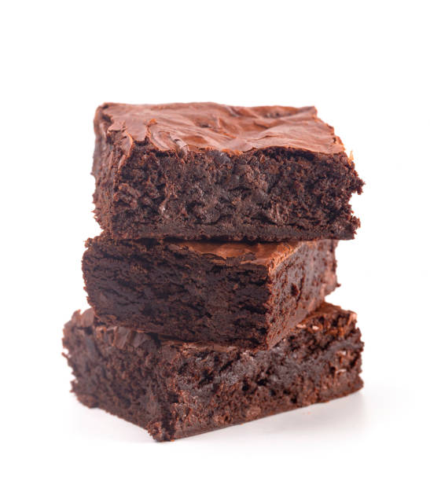

Sticky Date Brownies

Description
Disclaimer: none of the pictures used on my web pages are mine.
Another staple recipe of mine, one adapted from Minimalist Baker (all credit goes to her). Only uses three ingredients - dates, peanut butter and cocoa powder (as well as water, if you count that as an extra ingredient, ha).
It takes a bit of perseverence when it comes to blending it in the food processor, but the results are certainly worth it - the brownies are healthy enough to eat regularly, but stodgy enough to fill you up so you don't gorge on them (although the flavour kind of elicits that type of behaviour...).
Ingredients
- 2 cups of pitted dates, soaked for 30 mins
- 1/2 cup smooth peanut butter
- 1/3 cup cocoa powder
- 1/4 cup water
Method
- Preheat the oven to 180 degrees Celsius and line a traybake tin with greaseproof paper (greaseproof paper > foil in this situation - it's much easier to peel away from the brownies and doesn't split as easily as foil does).
- Soak the dates in freshly boiled water from the kettle, if you haven't already.
- Prepare a food processor for assault - drain away the water from the soaked dates and throw them in the processor with the fresh water. Blend them together until they get to a chutney-like consistency.
- Add the cocoa powder and peanut butter and blend until the brownies attain a batter-y consistency.
- Scrape the batter out of the food processor and into the lined traybake tin. Smooth down the top as best as possible and cook for around 10 mins or until the top as dried to the touch.
- Wait for approx 30 mins before cutting into the brownies and digging in!